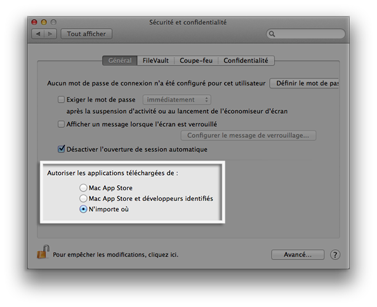

C'est la version la plus complète et la plus ancienne de TUER :
Lancer TUER
C'est la maquette de la version abandonnée utilisant JMonkeyEngine 2.0 :
Lancer TUER
C'est la maquette de la version courante utilisant JogAmp's Ardor3D Continuation :
| Système d'exploitation | GNU Linux | Apple Mac OS X | Microsoft Windows | ||||||||
| Version ou distro | Debian, Ubuntu, Mint, ... | Mageia, Fedora, Redhat, ... | Toutes | Lion, Mountain Lion, Mavericks, Yosemite | XP, Vista, 7, 8, 10 | ||||||
| Disponibilité | disponible | disponible | disponible | disponible | disponible | disponible | |||||
| Distribuable | paquetage DEB | paquetage RPM | archive tar.gz | archive tar.bz2 | installeur | archive zip | |||||
| 32-bit | 64-bit | 32-bit | 64-bit | 32-bit | 64-bit | universel | 32-bit | 64-bit | 32-bit | 64-bit | |
| Étape(s) d'installation |  | ||||||||||
|
|
|
|
|
|||||||
C'est la version pré-alpha de mon outil RAD utilisé pour créer des jeux de tir en vue subjective :
Logiciel temporairement indisponible
{kind=link}